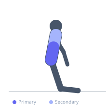

Exercise guide / Ab Wheel Rollout
Ab Wheel Rollout
The ab wheel rollout is an anti-extension core exercise in which the lifter rolls an ab wheel forward from a kneeling position and then uses core tension to pull it back. It is one of the most effective exercises for training the transverse abdominis and rectus abdominis under significant load, as the lever arm created by the extended arms is very long.
Primary muscles
transverse abdominis
rectus abdominis
Secondary muscles
erector spinae
latissimus dorsi
Stabilizers
deltoid anterior
Equipment
Ab Wheel (Ab Roller)


Starting position
- Kneel on the floor holding the ab wheel with both hands. Place the wheel directly in front of your knees. Core braced, back flat.
Setup
- Beginners should use a limited range of motion (rolling forward 1–2 feet) before progressing to a full rollout. A mat under the knees is recommended.
Steps
- Roll the wheel forward, extending the arms and hips while maintaining a rigid spine.
- Go as far as your core can maintain a neutral spine — do not let the lower back sag.
- Pull the wheel back toward the knees using core contraction and lats.
Coaching cues
- Brace like you are about to take a punch before each rep
- Do not let your hips sag — your body is a rigid board from knees to shoulders
Breathing
- Exhale during the rollout. Inhale on the return or hold breath with a brace.
Range of motion
- Roll out until the body is as extended as can be controlled, then return.
Tempo
- 3-0-3-0
Common mistakes
- Allowing the lower back to sag and hyperextend during the rollout
- Starting at too long a range before the core is strong enough
Safety
- Lower back pain may result if the core is not strong enough — start with partial rollouts
Training
- hypertrophy: 6–12 reps
- hypertrophy: 3–4 sets
- Rest: {'hypertrophy': 90}